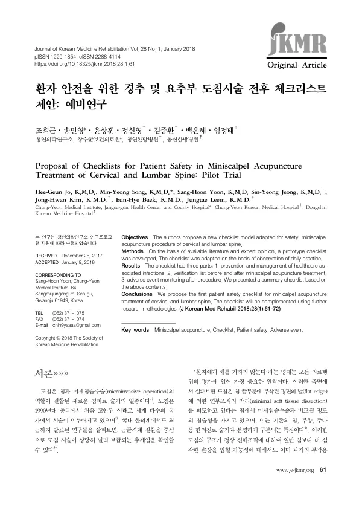

Proposal of Checklists for Patient Safety in Miniscalpel Acupuncture Treatment of Cervical and Lumbar Spine: Pilot Trial
Jo HG, Song MY, Yoon SH, Jeong SY, Kim JH, Baek EH, Leem J
Journal of Korean Medicine Rehabilitation 28(1):61-72

첫 장 · 오픈액세스First page · open access
논문 소개Summary
도침 시술의 환자 안전을 위한 체크리스트를 처음 제안한 예비연구입니다. 도침은 침 끝의 납작한 날로 연부조직을 박리하므로 침이나 부항, 추나와 달리 미세침습수술에 가까운 침습성을 가집니다. 문헌과 전문가 의견으로 초안을 만든 뒤 실제 진료를 관찰하며 다듬었습니다. 체크리스트는 세 부분으로 이루어집니다. 의료관련감염의 예방과 관리, 도침 시술 전후에 확인할 목록, 시술 후 이상반응 감시입니다. 경추와 요추 시술을 대상으로 했고 이를 요약한 한 장짜리 목록도 함께 실었습니다. 저자들은 이 초안을 다른 연구 방법론으로 보완해 나가겠다고 밝혔습니다.
A pilot study proposing the first patient safety checklist for miniscalpel acupuncture. A prototype was drafted from the available literature and expert opinion, then adapted through observation of daily practice. The checklist has three parts: prevention and management of healthcare-associated infections, a verification list for before and after the procedure, and adverse event monitoring afterwards. It covers cervical and lumbar spine treatment, and a one-page summary version is included. The authors state that the draft is to be complemented by further research methodology.
인용Cite
Jo HG, Song MY, Yoon SH, Jeong SY, Kim JH, Baek EH, Leem J. Proposal of Checklists for Patient Safety in Miniscalpel Acupuncture Treatment of Cervical and Lumbar Spine: Pilot Trial. Journal of Korean Medicine Rehabilitation. 2018;28(1):61-72. doi:10.18325/jkmr.2018.28.1.61